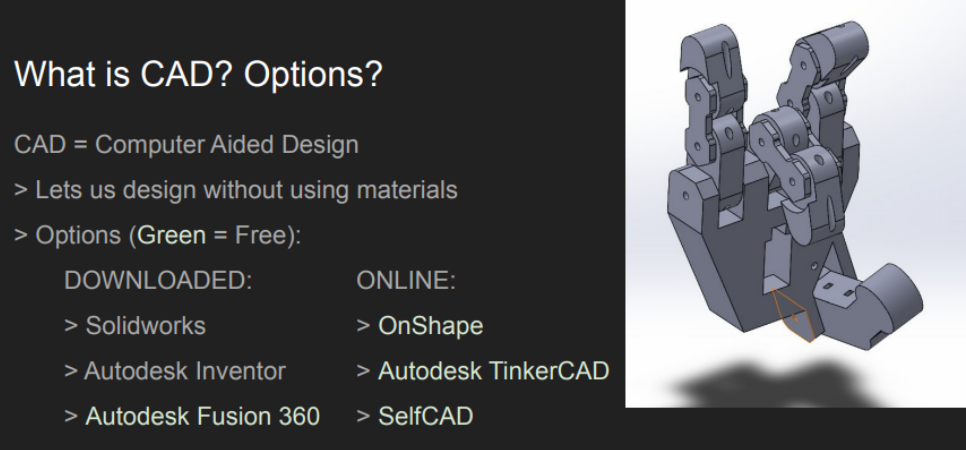

PORTFOLIO: WILLIAM SMYLIE

Welcome!
My name is William Smylie. I am a mechanical engineer with a passion for robotics and automation. I graduated from the University of Texas at Austin with a BS in mechanical engineering and a minor in computer science. There are two organization methods for this portfolio, chronologically and by order of my highlights - simply select the option you prefer below. Click any project to visit its dedicated page. To contact me for more info:
Email: WilliamSmylie0@gmail.com
Phone: +1-512-378-3149
Linkedin
Resume
Chronological |
Highlights |
Senior Capstone ME266KIn this final project of my time as an undergraduate, the primary goal was to reduce the size of a prototype gas sensor while still meeting cooling needs and adding functionality. |
|

|
Elements of Data Visualization CS329EThis class focused on both the science and techniques of crafting effective data visualizations as well as the python implementation in Altair to make HTML interactive plots. |
FirebotThis project, headed by Siddharth Thakur, is focused on building a robotic platform for use by firefighters in navigating burning buildings. My primary role was mechanical design and CAD. |
|
Senior Capstone ME366JThe fall capstone project was a full case study from consumer interest survey to finished prototype. This year, the project was designing a food sculptor. My main roles were electronics, mechatronics, software, and construction. |
|
|  |
ASME Technical SessionsAs the Technical Lead for the UT ASME organization, I developed and ran a variety of training sessions for members, including programming, CAD / design, and electronics. Samples from those trainings can be found here. |
Elements of Web Programming CS329EThis classwork included HTML, CSS, web page design principles, PHP, JS, and JQuery. My full semester website can be found here. |
|
Aristocrat Robotics Internship 2021This internship focused on taking a proof-of-concept robotics pitch and developing it into a version that was viable for long term use and production. |
|
Performance Robotics ES377KWe worked with two classes of 4th grade students to gather their ideas for robots they would like to see, and then made versions of their visions that held up on camera. This multidisciplinary class taught me many new ways to approach problems. |
|

|
NASA JPL & HeroX “Honey, I Shrunk the Payload” ChallengeThis case competition in spring-summer of 2020 focused on the development of a low resource science module for a lunar lander. Our solution focused on mass spectrometry of lunar regolith. |
ARL Honors Student Internship 2019This internship built on my previous summer's work, with a team of interns working to complete a robotic sonar platform. Tasks included hardware design, electronics, and writing an OS off of ROS. |
|
ARL Internship 2018This internship primarily focused on the development of a new battery pack for a robotic sonar platform. This development work was documented in a published paper. |
|
FIRST Robotics FTC Team 6990This page covers all of my years in FTC, but focuses on the 2017 season. I had the pleasure of being team lead while we advanced to the world semifinals, and received a top 10 THINK award. |